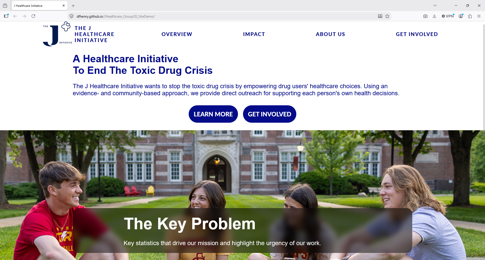
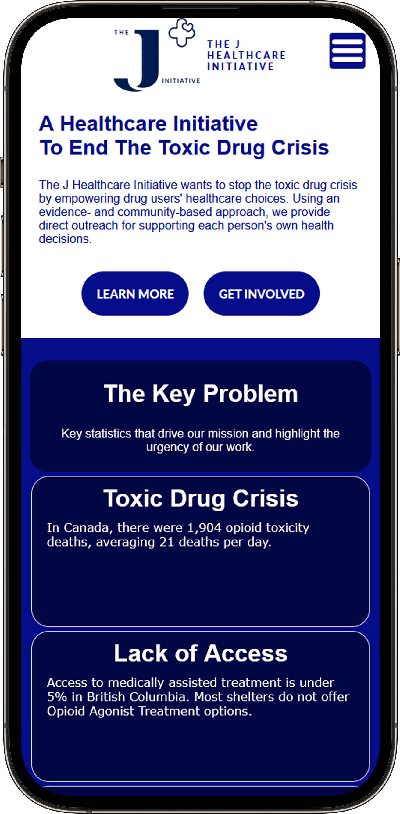

J Healthcare Initiative Website Redesign

Though Riipen Labs, a non-profit educational organization that helps post-secondary students find field work and internships, I was placed on a team to help the J Healthcare Initiatve, another non-profit who is seeking to reduce drug overdoses across Canada, to help with their messaging and internet presence.
During our group's research, we found that many low-income individuals access the internet through smartphones. This makes sense given that a smartphone is far less expensive than a laptop or desktop computer. We also took a look at their current website and found it was very unresponsive to screen size. With those two things in mind, we decided to re-vamp the website so that it is more responsive across multiple devices. We also added a navbar that stays at the top of the screen, as well as a hamburger menu that replaces the navbar when the screen width hits a minimun size.

The following link is where you can see the example homepage we made. As we had only 30 hours across three weeks to create this proposal, and a majority of that time was more logistical setup rather than doing the project itself, we only made a single page. However, it responds to screen size rather well, contrasts well regardless of background colours, and we also made the photos full colour rather than the monochromatic blue on black photos J Healthcare currently uses.
The J Healthcare Initiative Redesigned HomepageMy Experience with Riipen Labs
I was expecting to just get an assignment, do a simple task like prepare a slideshow pitchdeck, and be done. This was not the case. Instead, we had to figure out what to do and how to represent it. I knew going in that most other groups would simply get their slide deck done, and not bother with much else. In fact, I knew that most would simply do a redesign of a logo something else to do with J Healthcare's branding. My apporach was to showcase my skillsets as both a graphic designer and web developer by redesigning how their website functions based on the device being used.
In order to stand out, I always feel like you need something more than slides. You need a functioning product to show to clients. This is why I made this homepage in addition to the slide deck we made. We also did a video pitch with said slides and provided them the link.
What I Learned
First, I learned that I need to take more initiative in these situations. If there's no established manager going into a group, I should take the time to stand out as a leader, despite the fact that I am often reluctant to do so. I feel like the best leaders are the ones who don't desire that position of power, but do so to get a better result out of everyone on a team. Next time, I'll be introducing myself as soon as I've been assigned to a team, and take the lead to guide my team to create a great project!
Second, I often feel like I bite off more than I can chew when I start a new project. I think too big, and I need to temper that more. It's great to have grand ideas, but ideas are a dime a dozen and execution is priceless. If you can't execute on an idea in a given timeframe, then your work will suffer as a result.
All in all, however, I did have a positive experience with Riipen Labs, and I hope to do more with Riipen in the future. I've already signed up for future opportunities and I'm looking forward to the next project!